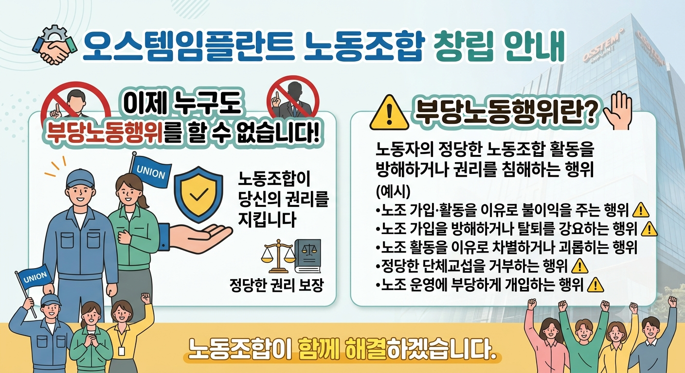
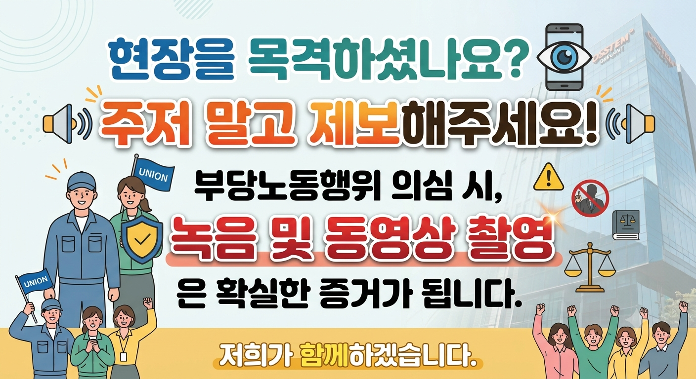

오스템임플란트 사우 여러분께 안내드립니다.
노동조합 활동과 조합원의 권리를 보호하기 위해 부당노동행위에 대한 제보를 받고 있습니다.
노동자의 정당한 노동조합 활동을 방해하거나 권리를 침해하는 행위를 말합니다.
[예시]
• 노조 가입·활동을 이유로 불이익을 주는 행위
• 노조 가입을 방해하거나 탈퇴를 강요하는 행위
• 노조 활동을 이유로 차별하거나 괴롭히는 행위
• 정당한 단체 교섭을 거부하는 행위
• 노조 운영에 부당하게 개입하는 행위
부당노동행위가 의심되거나 노동조합 활동 과정에서 어려움을 겪고 계신 경우, 언제든 제보해주시기 바랍니다.
보내주신 내용은 조합 활동과 조합원 권익 보호를 위해 소중하게 활용하겠습니다.

